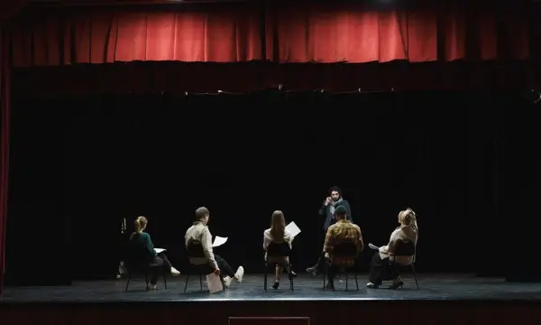
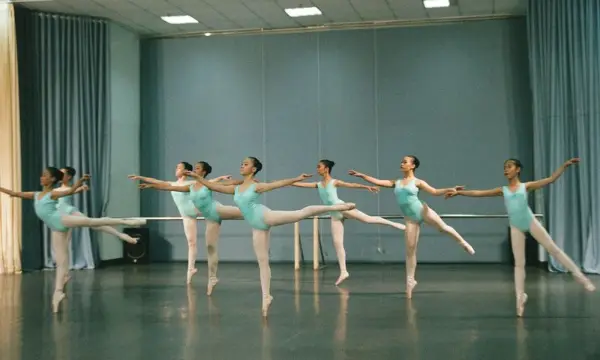
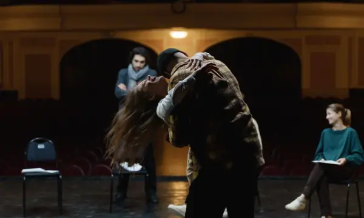
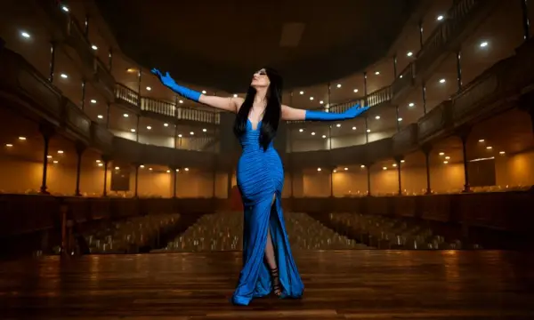
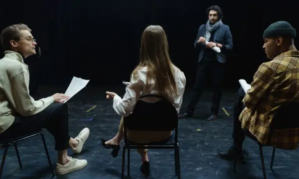
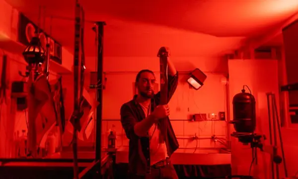
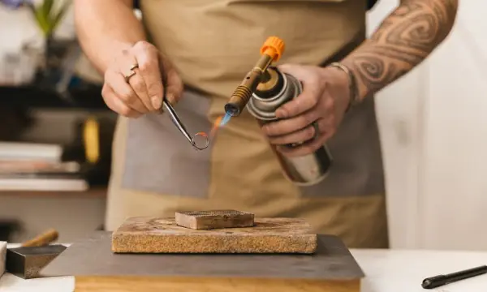
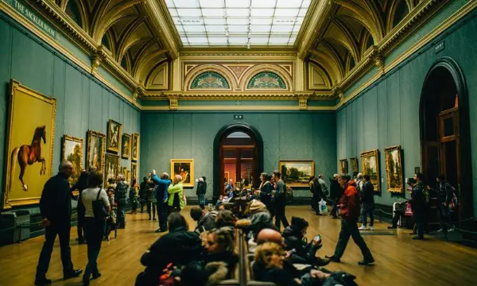
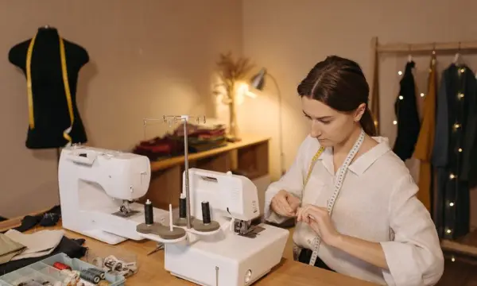

Movement
Terpsichore House
- BFA Musical Theater
- BFA Dance
- BFA Physical Theatre & Circus Arts
FICTIONALAurelian College of the Arts is not a real school. This is a UX design student project by Uyen Truong and David Pierre-Louis and does not accept applications.
Visit Day is Saturday, November 14. Tour campus, sit in on a class, and meet a House. Save your spot
Academics
Twenty-two bachelor's programs and one MFA, from ballet and opera to glassblowing and playwriting. Your program decides two things: the College that awards your degree, and the House you belong to.

Not sure which program fits? and we will point you to the right faculty.
Four families of art
Each House is the home of related arts and lives beside its own studios. Your degree is run by one of three Colleges: Performing Arts, Visual Arts, or Design & Production.
Movement

Sound

Drama on stage and screen

The eye and the hand
Every program

Terpsichore House · Movement
College of Performing Arts · 160 students
Lives on campus all four yearsActing, singing, and dance trained together, with roles in a full mainstage season from your first year.
Getting started: Audition: a 32-bar song, a one-minute monologue, and a dance call.

Terpsichore House · Movement
Ballet, Contemporary, or Commercial/Jazz
College of Performing Arts · 200 students
Lives on campus all four yearsDaily technique in sprung-floor studios, plus choreography, anatomy, and four performance seasons.
Getting started: Audition: ballet barre, a contemporary combination, and a short solo.
Terpsichore House · Movement
Aerial, acrobatics, or physical comedy
College of Performing Arts · 60 students
Lives on campus first yearAerial silks, trapeze, acrobatics, clowning, and devised theatre, trained in the Circus Barn with full rigging and safety crews.
Getting started: Audition: a movement class, a two-minute skill or physical piece, and a short interview. No circus experience needed.

Melpomene House · Drama on stage and screen
College of Performing Arts · 160 students
Lives on campus first yearClassical and screen acting, voice, and movement, ending in a showcase and a short film reel.
Getting started: Audition: two contrasting monologues, under two minutes each.
Euterpe House · Sound
Strings, winds, brass, percussion, piano, or harp
College of Performing Arts · 160 students
Lives on campus first yearWeekly private lessons, orchestra and chamber ensembles, with a juried recital each year.
Getting started: Audition: two contrasting pieces and sight-reading.

Euterpe House · Sound
Classical voice, opera, or choral
College of Performing Arts · 80 students
Lives on campus first yearPrivate voice lessons, diction in four languages, the Chapel Choir, and a fully staged opera every Spring.
Getting started: Audition: two contrasting art songs or arias, one not in English.
Euterpe House · Sound
Instrument, voice, or songwriting
College of Performing Arts · 70 students
Commuter-friendlySmall-group jazz, big band, songwriting, and live sets every Friday in the Cellar Club.
Getting started: Audition: a standard of your choice with an improvised chorus, or two original songs.
Euterpe House · Sound
College of Performing Arts · 120 students
Commuter-friendlyWriting, recording, and scoring for stage, film, and games, in the Chapel Street recording studios.
Getting started: Portfolio: three recorded or notated pieces.

Melpomene House · Drama on stage and screen
Stage or screen
College of Performing Arts · 30 students
Lives on campus first yearDirect scenes from your first term and a full production in the Black Box by your fourth year.
Getting started: Portfolio: a director's concept for a play of your choice, and an interview.
Melpomene House · Drama on stage and screen
Playwriting, screenwriting, fiction, or poetry
College of Performing Arts · 70 students
Commuter-friendlyWrite plays, screenplays, stories, and poems, and hear your work read aloud by actors at Script Night every week.
Getting started: Writing sample: 10 to 20 pages of plays, prose, or poems.
Thalia House · The eye and the hand
Painting, Sculpture, or Printmaking
College of Visual Arts · 120 students
Commuter-friendlyYour own studio space from second year, with critiques every week and a senior exhibition in the Long Gallery.
Getting started: Portfolio: 12 to 20 pieces, including drawing from life.
Thalia House · The eye and the hand
College of Visual Arts · 100 students
Commuter-friendlyDrawing, visual storytelling, and 2D and 3D animation for books, games, and film.
Getting started: Portfolio: 12 to 20 pieces, including a sketchbook.
Melpomene House · Drama on stage and screen
College of Visual Arts · 140 students
Commuter-friendlyDirecting, camera, lighting, and editing, from your first short to a senior thesis film.
Getting started: Portfolio: a short film or reel under five minutes.

Thalia House · The eye and the hand
College of Visual Arts · 60 students
Commuter-friendlyFilm and digital photography, a working darkroom, and studio lighting.
Getting started: Portfolio: 15 to 20 photographs.

Thalia House · The eye and the hand
College of Visual Arts · 40 students
Commuter-friendlyMetalsmithing, stone setting, and casting, with a starter tool kit, metals, and forge hours included.
Getting started: Portfolio: 12 to 20 pieces in any material.
Thalia House · The eye and the hand
Ceramics or glass
College of Visual Arts · 50 students
Commuter-friendlyWheel throwing, hand building, glassblowing, and kiln firing, with clay, glass, and kiln time included.
Getting started: Portfolio: 12 to 20 pieces in any material.

Thalia House · The eye and the hand
College of Visual Arts · 40 students
Commuter-friendlyArt and architecture from antiquity to now, with a museum and gallery pass included.
Getting started: Writing sample: an essay of 1,000 to 2,000 words.
Melpomene House · Drama on stage and screen
Costume, Lighting, Set, or Sound
College of Design & Production · 100 students
Lives on campus first yearDesign and build every production on campus. First-years crew the shows.
Getting started: Portfolio and a short interview.

Thalia House · The eye and the hand
Fashion, textiles, or costume
College of Design & Production · 60 students
Commuter-friendlyPattern cutting, sewing, weaving, dyeing, and printing fabric, ending in a runway show at the Spring Open Studios.
Getting started: Portfolio: 10 to 20 pieces, including sketches or garments.
Thalia House · The eye and the hand
College of Design & Production · 50 students
Commuter-friendlyBrand, editorial, and digital product design, with a studio project for a real arts organization each year.
Getting started: Portfolio: 10 to 15 pieces, sketches welcome.
Thalia House · The eye and the hand
College of Design & Production · 30 students
Commuter-friendlyDesign studios, building technology, and history, with a model-making kit, software, and large-format printing included.
Getting started: Portfolio: 10 to 15 pieces of any kind of making.
Melpomene House · Drama on stage and screen
College of Design & Production · 60 students
Commuter-friendlyProducing, marketing, fundraising, and running arts organizations, with an internship in your third year.
Getting started: Essay and a short interview.
Euterpe House · Sound
Graduate, two years
College of Performing Arts · 24 students
Commuter-friendlyBook writers, lyricists, and composers write a new musical and hear it read by BFA students.
Getting started: Writing sample: a scene with two songs.
Try a different word or show every House.
How a degree works
Most of your time is studio work in your own art, taught through a weekly tutorial with one to three classmates and a Fellow of your House. Grades are Distinction, Merit, Pass, or Not Yet.
120 credits to graduate
66 credits
Daily practice in your art, your weekly tutorial, and the Senior Capstone
24 credits
Classes of 12 to 20 in the history, theory, and writing of your art
12 credits
Shared classes, seated across Houses
6 credits
Two collaborations with the other three Houses
12 credits
Any classes in any College
Beyond your major
Open any row to see what it involves.
Twelve credits everyone takes, seated so every seminar mixes at least three Houses: Art and Ideas I, II, and III; Writing About Your Work; The Working Artist (contracts, money, agents); and The Healthy Artist (injury, voice, rest).
In second and third year, every student joins a Quartet each Spring: four students, one from each House, making one finished piece together. Each is worth 3 credits and is shown at Quartet Night.
Arts Entrepreneurship, Dance Education, Stage Combat, and Music for Media. Each is 12 credits and uses your electives. Minors never change your House.
The MFA in Musical Theater Writing is a two-year program for book writers, lyricists, and composers, who are graduate members of Euterpe House. Your thesis musical gets a staged reading with the BFA company.
Spend one Spring term of third year in Florence or Paris. It counts as 10 credits and adds $4,000 to your package, once.
Three terms
Ten-week terms with long breaks for summer stock, festivals, and internships.
September 28 to December 4
January 11 to March 19
April 5 to June 11